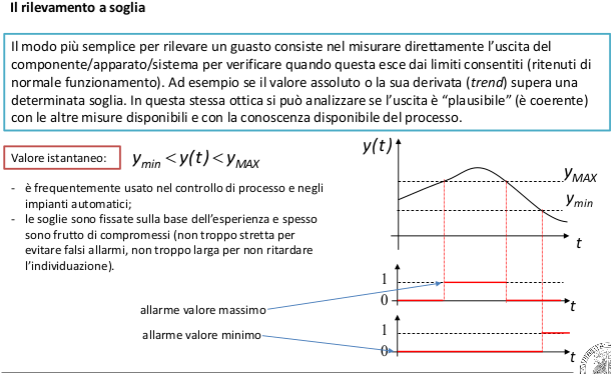

Soglie adattive


un processo stocastico si dice ergodico quando le medie statistiche convergono quasi ovunque alle medie temporali.


Per confrontare le due ipotesi non è ammissibile analizzare l’intera popolazione (e.g. tutti i prodotti che escono da un macchinario), la cui uscita si ritiene caratterizzata (secondo H 0 ) da μ 0 e σ 0 : è necessario analizzare media e deviazione dell’uscita y relativa a un solo campione ristretto di tale popolazione. Generalmente si avranno μ 1 e σ 1 diversi. Stabilire se siano abbastanza diversi da rigettare H 0 o meno è compito dell’hypothesis testing.Per effettuare una decisione in merito si effettua un test statistico: si mettono a confronto, secondo certe formule, media e deviazione della popolazione e del campione analizzato (le caratteristiche del campione sono denotate con unˆsopra):